공조냉동기계기사(구) (2016-05-08 기출문제)
1과목: 기계열역학
1. 그림과 같은 Rankine 사이클의 열효율은 약 몇 %인가? (단, h1 = 191.8kJ/kg, h2 = 193.8kJ/kg, h3 = 2799.5kJ/kg, h4 = 2007.5kJ/kg 이다.)
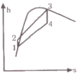
- 30.3%
- 39.7%
- 46.9%
- 54.1%
(정답률: 73%)

2. 대기압 100kPa에서 용기에 가득 채운 프로판을 일정한 온도에서 진공펌프를 사용하여 2kPa 까지 배기하였다. 용기 내에 남은 프로판의 중량은 처음 중량의 몇 % 정도 되는가?
- 20%
- 2%
- 50%
- 5%
(정답률: 76%)
3. 이상기체에서 엔탈피 h와 내부에너지 u, 엔트로피 s 사이에 성립하는 식으로 옳은 것은? (단, T는 온도, v는 체적, P는 압력이다.)
- Tds = dh + vdP
- Tds = dh - vdP
- Tds = du - Pdv
- Tds = dh + d(Pv)
(정답률: 70%)
4. 온도가 150℃인 공기 3kg이 정압 냉각되어 엔트로피가 1.063kJ/K 만큼 감소되었다. 이때 방출된 열량은 약 몇 kJ 인가? (단, 공기의 정압비열은 1.01kJ/kgㆍK이다.)
- 27
- 379
- 538
- 715
(정답률: 39%)
5. 20℃의 공기 5kg이 정압 과정을 거쳐 체적이 2배가 되었다. 공급한 열량은 약 몇 kJ 인가? (단, 공기의 정압비열은 1kJ/kgㆍK이다.)
- 1465
- 2198
- 2931
- 4397
(정답률: 66%)
6. 공기 1kg을 정적과정으로 40℃에서 120℃까지 가열하고, 다음에 정압과정으로 120℃에서 220℃까지 가열한다면 전체 가열에 필요한 열량으로 적절한 것은? (단, 정압비열은 1.00kJ/kgㆍK, 정적비열은 0.71kJ/kgㆍK 이다.)
- 127.8kJ/kg
- 141.5kJ/kg
- 156.8kJ/kg
- 185.2kJ/kg
(정답률: 71%)
7. 온도 T2인 저온체에서 열량 QA를 흡수해서 온도가 T1인 고온체로 열량 QB를 방출할 때 냉동기의 성능계수(coefficient of performance)는?
- QB-QA/QA
- QB/QA
- QA/QB-QA
- QA/QB
(정답률: 84%)
8. 다음 중 수소(H2)를 이상기체로 생각하였을 때, 절대압력 1MPa, 온도 100℃에서의 비체적은 약 몇 m3/kg인가? (단, 일반기체상수는 8.3145 kJ/kmolㆍK 이다.)
- 0.781
- 1.26
- 1.55
- 3.46
(정답률: 68%)
9. 비열비가 k인 이상기체로 이루어진 시스템이 정압과정으로 부피가 2배로 팽창할 때 시스템이 한 일이 W, 시스템에 전달된 열이 Q일 때, W/Q는 얼마인가? (단, 비열은 일정하다.)
- k
- 1/k
- k/k-1
- k-1/k
(정답률: 52%)
10. 밀폐계의 가역 정적변화에서 다음 중 옳은 것은? (단, U : 내부에너지, Q : 전달된 열, H : 엔탈피, V : 체적, W : 일 이다.)
- dU = dQ
- dH = dQ
- dV = dQ
- dW = dQ
(정답률: 66%)
11. 카르노 열기관 사이클 A는 0℃와 100℃ 사이에서 작동되며 카르노 열기관 사이클 B는 100℃와 200℃사이에서 작동된다. 다음 중 사이클 A의 효율(ηA)과 사이클 B의 효율(ηB)을 각각 구하면?
- ηA = 26.80%, ηB = 50.00%
- ηA = 26.80%, ηB = 21.14%
- ηA = 38.75%, ηB = 50.00%
- ηA = 38.75%, ηB = 21.14%
(정답률: 79%)
12. 다음 중 밀도 1000kg/m3인 물이 단면적 0.01m2인 관속을 2m/s의 속도로 흐를 때, 질량유량은?
- 20kg/s
- 2.0kg/s
- 50kg/s
- 5.0kg/s
(정답률: 76%)
13. 열역학적 상태량은 일반적으로 강도성 상태량과 용량성 상태량으로 분류할 수 있다. 강도성 상태량에 속하지 않는 것은?
- 압력
- 온도
- 밀도
- 체적
(정답률: 81%)
14. 질량 1kg의 공기가 밀폐계에서 압력과 체적이 100kPa, 1m3이었는데 폴리트로픽 과정(PVn = 일정)을 거쳐 체적이 0.5m3이 되었다. 최종 온도(T2)와 내부 에너지의 변화량(△U)은 각각 얼마인가? (단, 공기의 기체상수는 287J/kgㆍK, 정적비열은 718J/kgㆍK, 정압비열은 10⑤J/kgㆍK, 폴리트로프 지수는 1.3이다.)
- T2 = 459.7K, △U = 111.3kJ
- T2 = 459.7K, △U = 79.9kJ
- T2 = 428.9K, △U = 80.5kJ
- T2 = 428.9K, △U = 57.8kJ
(정답률: 47%)
15. 냉동실에서의 흡수 열량이 5 냉동톤(RT)인 냉동기의 성능계수(COP)가 2, 냉동기를 구동하는 가솔린 엔진의 열효율이 20%, 가솔린의 발열량이 43000kJ/kg 일 경우, 냉동기 구동에 소요되는 가솔린의 소비율은 약 몇 kg/h인가? (단, 1 냉동톤(RT)은 약 3.86kW 이다.)
- 1.28 kg/h
- 2.54 kg/h
- 4.04 kg/h
- 4.85 kg/h
(정답률: 59%)
16. 그림과 같이 중간에 격벽이 설치된 계에서 A에는 이상기체가 충만되어 있고, B는 진공이며, A와 B의 체적은 같다. A와 B사이의 격벽을 제거하면 A의 기체는 단열비가역 자유팽창을 하여 어느 시간 후에 평형에 도달하였다. 이 경우의 엔트로피 변화 △s는? (단, Cv는 정적비열, Cp는 정압비열, R은 기체상수이다.)
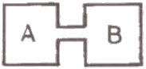
- △s = Cv × ln2
- △s = Cp × ln2
- △s = 0
- △s = R × ln2
(정답률: 50%)
17. 과열증기를 냉각시켰더니 포화영역 안으로 들어와서 비체적이 0.2327m3/kg이 되었다. 이때의 포화액과 포화증기의 비체적이 각각 1.079×10-3m3/kg, 0.5243m3/kg이라면 건도는?
- 0.964
- 0.772
- 0.653
- 0.443
(정답률: 70%)
18. 냉동기 냉매의 일반적인 구비조건으로서 적절하지 않은 것은?
- 임계 온도가 높고, 응고 온도가 낮을 것
- 증발열이 적고, 증기의 비체적이 클 것
- 증기 및 액체의 점성이 작을 것
- 부식성이 없고, 안정성이 있을 것
(정답률: 81%)
19. 30℃, 100kPa의 물을 800kPa까지 압축한다. 물의 비체적이 0.001m3/kg로 일정하다고 할 때, 단위 질량당 소요된 일(공업일)은?
- 167 J/kg
- 602 J/kg
- 700 J/kg
- 1,400 J/kg
(정답률: 77%)
20. 오토 사이클의 압축비가 6인 경우의 이론 열효율은 약 몇 %인가? (단, 비열비 = 1.4 이다.)
- 51
- 54
- 59
- 62
(정답률: 75%)
2과목: 냉동공학
21. 온도식 자동팽창밸브의 감온통 설치방법으로 틀린 것은?
- 증발기 출구 측 압축기로 흡입되는 곳에 설치할 것
- 흡입 관경이 20A 이하인 경우에는 관 상부에 설치할 것
- 외기의 영향을 받을 경우는 보온해 주거나 감온통 포켓을 설치할 것
- 압축기 흡입관에 트랩이 있는 경우에는 트랩 부분에 부착할 것
(정답률: 74%)
22. 흡수식 냉동기에서의 냉각원리로 옳은 것은?
- 물이 증발할 때 주위에서 기화열을 빼앗고 열을 빼앗기는 쪽은 냉각되는 현상을 이용한다.
- 물이 응축할 때 주위에서 액화열을 빼앗고 열을 빼앗기는 쪽은 냉각되는 현상을 이용한다.
- 물이 팽창할 때 주위에서 팽창열을 빼앗고 열을 빼앗기는 쪽은 냉각되는 현상을 이용한다.
- 물이 압축할 때 주위에서 압축열을 빼앗고 열을 빼앗기는 쪽은 냉각되는 현상을 이용한다.
(정답률: 76%)
23. 15℃의 순수한 물로 0℃의 얼음을 매시간 50kg 만드는데 냉동기의 냉동능력은 약 몇 냉동톤인가? (단, 1 냉동톤은 3320kcal/h이며, 물의 응축잠열은 80kcal/kg이고, 비열은 1kcal/kgㆍ℃이다.)
- 0.67
- 1.43
- 2.80
- 3.21
(정답률: 76%)
24. 고속다기통 압축기의 장점으로 틀린 것은?
- 용량제어 장치인 시동부하 경감기(starting unloader)를 이용하여 기동 시 무부하 기동이 가능하고, 대용량에서도 시동에 필요한 동력이 적다.
- 크기에 비하여 큰 냉동능력을 얻을 수 있고, 설치 면적은 입형압축기에 비하여 1/2~1/3 정도이다.
- 언로더 기구에 의해 자동 제어 및 자동 운전이 용이하다.
- 압축비의 증가에 따라 체적 효율의 저하가 작다.
(정답률: 54%)
25. 압축기 실린더의 체적효율이 감소되는 경우가 아닌 것은?
- 클리어런스(clerance)가 작을 경우
- 흡입ㆍ토출밸브에서 누설될 경우
- 실린더 피스톤이 과열될 경우
- 회전속도가 빨라질 경우
(정답률: 70%)
26. 두께 30cm의 벽돌로 된 벽이 있다. 내면의 온도가 21℃, 외면의 온도가 35℃일 때 이 벽을 통해 흐르는 열량은? (단, 벽돌의 열전도율 K는 0.793 W/mㆍK이다.)
- 32 W/m2
- 37 W/m2
- 40 W/m2
- 43 W/m2
(정답률: 75%)
27. 동일한 냉동실 온도조건으로 냉동설비를 할 경우 브라인식과 비교한 직접팽창식에 관한 설명으로 틀린 것은?
- 냉매의 증발온도가 낮다.
- 냉매 소비량(충전량)이 많다.
- 소요동력이 적다.
- 설비가 간단하다.
(정답률: 40%)
28. 흡수식 냉동기에서 냉매의 과냉 원인이 아닌 것은?
- 냉수 및 냉매량 부족
- 냉각수 부족
- 증발기 전열면적 오염
- 냉매에 용액이 혼입
(정답률: 67%)
29. 다음 그림은 이상적인 냉동 사이클을 나타낸 것이다. 각 과정에 대한 설명으로 틀린 것은?
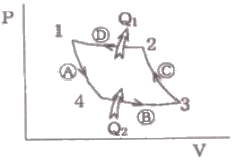
- A 과정은 단열팽창이다.
- B 과정은 등온압축이다.
- C 과정은 단열압축이다.
- D 과정은 등온압축이다.
(정답률: 79%)
30. 압축기에 사용되는 냉매의 이상적인 구비조건으로 옳은 것은?
- 임계온도가 낮을 것
- 비열비가 작을 것
- 증발잠열이 작을 것
- 비체적이 클 것
(정답률: 64%)
31. 다음 중 냉동장치의 제상에 대한 설명으로 옳은 것은?
- 제상은 증발기의 성능 저하를 막기 위해 행해진다.
- 증발기에 착상이 심해지면 냉매 증발압력은 높아진다.
- 살수식 제상 장치에 사용되는 일반적인 수온은 약 50~80℃로 한다.
- 핫가스 제상이라 함은 뜨거운 수증기를 이용하는 것이다.
(정답률: 60%)
32. 냉매배관 중 액분리기에서 분리된 냉매의 처리방법으로 틀린 것은?
- 응축기로 순환시키는 방법
- 증발기로 재순환 시키는 방법
- 고압 측 수액기로 회수하는 방법
- 가열시켜 액을 증발시키고 압축기로 회수하는 방법
(정답률: 64%)
33. 실내 벽면의 온도가 –40℃인 냉장고의 벽을 노점 온도를 기준으로 방열하고자 한다. 열전도율이 0.035kca/m2ㆍhㆍ℃인 방열재를 사용한다면 두께는 얼마로 하면 좋은가? (단, 외기온도는 30℃, 상대습도는 85%, 노점온도는 27.2℃, 방열재와 외기와의 열전달률은 7kcal/ㆍhㆍ℃로 한다.)
- 50mm
- 75mm
- 100mm
- 125mm
(정답률: 33%)
34. 냉각수 입구온도 25℃, 냉각수량 1000L/min인 응축기의 냉각 면적이 80m2, 그 열통과율이 600kcal/m2ㆍhㆍ℃이고, 응축온도와 냉각수온의 평균 온도차가 6.5℃이면 냉각수 출구온도는?
- 28.4℃
- 32.6℃
- 29.6℃
- 30.2℃
(정답률: 59%)
35. 역카르노 사이클에서 T-S선도상 성적계수 ε를 구하는 식은? (단, AW: 외부로부터 받은 일, Q1 : 고온으로 배출하는 열량, Q2 : 저온으로부터 받은 열량, T1 : 고온, T2 : 저온)
- ε = AW/Q1
- ε = Q1-Q2/Q2
- ε = T1-T2/T1
- ε = T2/T1-T2
(정답률: 75%)
36. 드라이어(dryer)에 관한 설명으로 옳은 것은?
- 주로 프레온 냉동기보다 암모니아 냉동기에 사용된다.
- 냉동장치내에 수분이 존재하는 것은 좋지 않으므로 냉매 종류에 관계없이 소형 냉동장치에 설치한다.
- 프레온은 수분과 잘 용해하지 않으므로 팽창밸브에서의 동결을 방지하기 위하여 설치한다.
- 건조제로는 황산, 염화칼슘 등의 물질을 사용한다.
(정답률: 64%)
37. 다음 중 아이스크림 등을 제조할 때 혼합원료에 공기를 포함시켜서 얼리는 동결장치는?
- 프리져(freezer)
- 스크류 콘베어
- 하드닝 터널
- 동결 건조기(freeze drying)
(정답률: 75%)
38. 압력-온도선도(듀링선도)를 이용하여 나타내는 냉동사이클은?
- 증기 압축식 냉동기
- 원심식 냉동기
- 스크롤식 냉동기
- 흡수식 냉동기
(정답률: 73%)
39. 증발식 응축기에 대한 설명으로 옳은 것은?
- 냉각수의 감열(현열)로 냉매가스를 응축
- 외기의 습구 온도가 높아야 응축능력 증가
- 응축온도가 낮아야 응축능력 증가
- 냉각탑과 응축기의 기능을 하나로 합한 것
(정답률: 54%)
40. 어떤 암모니아 냉동기의 이론 성적 계수는 4.75이고, 기계효율은 90%, 압축효율은 75%일 때 1냉동톤(1RT)의 능력을 내기 위한 실제 소요마력은 약 몇 마력(PS)인가?
- 1.64
- 2.73
- 3.63
- 4.74
(정답률: 52%)
3과목: 공기조화
41. 다음 공기조화 장치 중 실내로부터 환기의 일부를 외기와 혼합한 후 냉각코일을 통과시키고, 이 냉각코일 출구의 공기와 환기의 나머지를 혼합하여 송풍기로 실내에 재순환시키는 장치의 흐름도는?
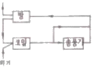
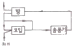
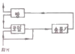
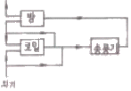
(정답률: 75%)
42. 공기 중에 떠 다니는 먼지는 물론 가스와 미생물 등의 오염 물질까지도 극소로 만든 설비로서 청정 대상이 주로 먼지인 경우로 정밀측정실이나 반도체 산업, 필름 공업 등에 이용되는 시설을 무엇이라 하는가?
- 클린아웃(CO)
- 칼로리미터
- HEPA필터
- 산업용 클린룸(ICR)
(정답률: 72%)
43. 덕트 시공도 작성 시 유의사항으로 틀린 것은?
- 소음과 진동을 고려한다.
- 설치 시 작업공간을 확보한다.
- 덕트의 경로는 될 수 있는 한 최장거리로 한다.
- 댐퍼의 조작 및 점검이 가능한 위치에 있도록 한다.
(정답률: 84%)
44. 아래의 그림은 공조기에 ① 상태의 외기와 ② 상태의 실내에서 돌아온 공기가 공조기로 들어와 ⑥ 상태로 실내로 공급되는 과정을 습공기 선도에 표현한 것이다. 공조기 내 과정을 적절하게 나열한 것은?
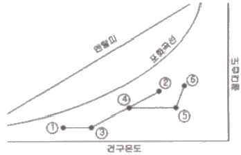
- 예열 – 혼합 – 증기가습 – 가열
- 예열 – 혼합 – 가열 – 증기가습
- 예열 – 증기가습 – 가열 – 증기가습
- 혼합 – 제습 – 증기가습 – 가열
(정답률: 76%)
45. 공장의 저속 덕트방식에서 주덕트 내의 권장풍속으로 가장 적당한 것은?
- 36~39m/s
- 26~29m/s
- 16~19m/s
- 6~9m/s
(정답률: 75%)
46. 송풍량 2500m3/h 공기(건구온도 12℃, 상대습도 60%)를 20℃까지 가열하는 데 필요로 하는 열량은? (단, 처음 공기의 비체적 v = 0.815m3/kg, 가열 전후의 엔탈피는 각각 h1 = 6kcal/kg, h2 = 8kcal/kg 이다.)
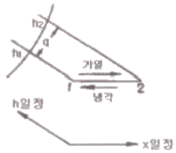
- 4075kcal/h
- 5000kcal/h
- 6135kcal/h
- 7362kcal/h
(정답률: 60%)
47. 온풍난방에 관한 설명으로틀린 것은?
- 실내 충고가 높을 경우 상하 온도차가 커진다.
- 실내의 환기나 온습도 조절이 비교적 용이하다.
- 직접 난방에 비하여 설비비가 높다.
- 연도의 과열에 의한 화재에 주의해야 한다.
(정답률: 66%)
48. 전압기준 국부저항계수 ζT와 정압기준 국부저항계수 ζS와의 관계를 바르게 나타낸 것은? (단, 덕트 상류 풍속을 v1, 하류 풍속을 v2라 한다.,)
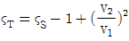
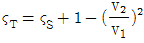
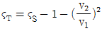
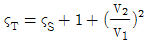
(정답률: 67%)
49. 가변풍량 방식에 대한 설명으로 틀린 것은?
- 부분 부하 시 송풍기 동력을 절감할 수 없다.
- 시운전 시 토출구의 풍량조정이 간단하다.
- 부하변동에 따라 송풍량을 조절하므로 에너지 낭비가 적다.
- 동시 부하율을 고려하여 설비용량을 적게 할 수 있다.
(정답률: 66%)
50. 증기 보일러의 발생열량이 60000kcal/h, 환산증발량이 111.3kg/h이다. 이 증기 보일러의 상당방열면적(EDR)은? (단, 표준방열량을 이용한다.)
- 32.1m2
- 92.3m2
- 133.3m2
- 539.8m2
(정답률: 57%)
51. 펌프의 공동현상에 관한 설명으로 틀린 것은?
- 흡입 배관경이 클 경우 발생한다.
- 소음 및 진동이 발생한다.
- 임펠러 침식이 생길 수 있다.
- 펌프의 회전수를 낮추어 운전하면 이 현상을 줄일 수 있다.
(정답률: 71%)
52. 보일러에서 발생한 증기량이 소비량에 비해 과잉일 경우 액화저장하고 증기량이 부족할 경우 저장 증기를 방출하는 장치는?
- 절탄기
- 과열기
- 재열기
- 축열기
(정답률: 71%)
53. 대규모 건물에서 외벽으로부터 떨어진 중앙부는 외기 조건의 영향을 적게 받으며, 인체와 조명등 및 실내기구의 발열로 인해 경우에 따라 동절기 및 중간기에 냉방이 필요한 때가 있다. 이와 같은 건물의 회의실, 식당과 같이 일반 사무실에 비해 현열비가 크게 다른 경우 계통별로 구분하여 조닝하는 방법은?
- 방위별 조닝
- 부하특성별 조닝
- 사용시간별 조닝
- 건물층별 조닝
(정답률: 77%)
54. 공기조화방식에서 팬코일 유닛방식에 대한 설명으로 틀린 것은?
- 사무실, 호텔, 병원 및 점포 등에 사용한다.
- 배관방식에 따라 2관식 4관식으로 분류된다.
- 중앙기계실에서 냉수 또는 온수를 공급하여 각 실에 설치한 팬코일 유닛에 의해 공조하는 방식이다.
- 팬코일 유닛방식에서의 열부하 분담은 내부존 팬코일 유닛방식과 외부존 터미널방식 있다.
(정답률: 60%)
55. 아네모스탯(anemostat)형 취출구에서 유인비의 정의로 옳은 것은? (단, 취출구로부터 공급된 조화공기를 1차 공기(PA), 실내공기가 유인되어 1차 공기와 혼합한 공기를 2차 공기(SA), 1차와 2차 공기를 모두 합한 것을 전동기(TA)라 한다.)
- TA/SA
- PA/TA
- TA/PA
- SA/TA
(정답률: 57%)
56. 복사 패널의 시공법에 관한 설명으로 틀린 것은?
- 코일의 전 길이는 50m 정도 이내로 한다.
- 온도에 따른 열팽창을 고려하여 천장의 짧은 변과 코일의 직선부가 평행하도록 배관한다.
- 콘크리트의 양생은 30℃이상의 온도에서 12시간 이상 건조 시킨다.
- 파이프 코일의 매설 깊이는 코일 외경의 1.5배 정도로 한다.
(정답률: 64%)
57. 온도 20℃, 포화도 60% 공기의 절대습도는? (단, 온도 20℃의 포화 습공기의 절대습도 xs = 0.01469kg/kg이다.)
- 0.001623kg/kg
- 0.004321kg/kg
- 0.006712kg/kg
- 0.008814kg/kg
(정답률: 65%)
58. 외기 및 반송(return)공기의 분진량이 각각 CO, CR이고, 공급되는 외기량 및 필터로 반송되는 공기량은 각각 QO, QR이며, 실내 발생량이 M이라 할 때 필터의 효율(η)은?
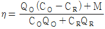
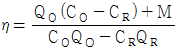
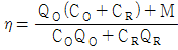
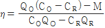
(정답률: 55%)
59. 각층 유닛방식의 특징이 아닌 것은?
- 공조기 수가 줄어들어 설비비가 저렴하다.
- 사무실과 병원 등의 각 층에 대하여 시간차 운전에 적합하다.
- 송풍덕트가 짧게 되고, 주덕트의 수평덕트는 각 층의 복도 부분에 한정되므로 수용이 용이하다.
- 설계에 따라서는 각 층 슬래브의 관통덕트가 없게 되므로 방재 상 유리하다.
(정답률: 76%)
60. 공기조절기의 공기냉각 코일에서 공기와 냉수의 온도변화가 그림과 같았다. 이 코일의 대수평균 온도차(LMTD)는?
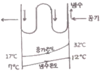
- 9.7℃
- 12.4℃
- 14.4℃
- 15.6℃
(정답률: 68%)
4과목: 전기제어공학
61. 100V, 6A의 전열기로 2L의 물을 15℃에서 95℃까지 상승시키는 데 약 몇 분이 소요되는가? (단, 전열기는 발생 열량의 80%가 유효하게 사용되는 것으로 한다.)
- 15.64
- 18.36
- 21.26
- 23.15
(정답률: 36%)
62. 제어동작에 대한 설명 중 틀린 것은?
- 비례동작 : 편차의 제곱에 비례한 조작신호를 낸다.
- 적분동작 : 편차의 적분값에 비례한 조작신호를 낸다.
- 미분동작 : 조작신호가 편차의 증가속도에 비례하는 동작을 한다.
- 2위치동작 : ON-OFF 동작이라고도 하며, 편차의 정부(+,-)에 따라 조작부를 전폐 또는 전개하는 것이다.
(정답률: 68%)
63. 비행기 등과 같은 움직이는 목표값의 위치를 알아보기 위한 즉, 원뿔주사를 이용한 서보용 제어기는?
- 추적레이더
- 자동조타장치
- 공작기계의 제어
- 자동평형기록계
(정답률: 80%)
64. 신호흐름선도의 기본 성질로 틀린 것은?
- 마디는 변수를 나타낸다.
- 대수방정식으로 도시한다.
- 선형 시스템에만 적용된다.
- 루프이득이란 루프의 마디이득이다.
(정답률: 50%)
65. 플레밍의 왼손법칙에서 엄지손가락이 가리키는 것은?
- 전류 방향
- 힘의 방향
- 기전력 방향
- 자력선 방향
(정답률: 74%)
66. 회전하는 각도를 디지털량으로 출력하는 검출기는?
- 로드셀
- 보간치
- 엔코더
- 퍼텐쇼미터
(정답률: 68%)
67. 시간에 대해서 설정값이 변화하지 않는 것은?
- 비율제어
- 추종제어
- 프로세스제어
- 프로그램제어
(정답률: 39%)
68. i = Imsinωt 인 정현파 교류가 있다. 이 전류보다 90° 앞선 전류를 표시하는 식은?
- Imcosωt
- Imsinωt
- Imcos(ωt+90°)
- Imsin(ωt-90°)
(정답률: 54%)
69. 논리식
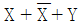
를 불대수의 정리를 이용하여 간단히 하면?- Y
- 1
- 0
- X + Y
(정답률: 50%)
70. 다음의 전동력 응용기계에서 GD2의 값이 작은 것에 이용될 수 있는 것으로서 가장 바람직한 것은?
- 압연기
- 냉동기
- 송풍기
- 승강기
(정답률: 54%)
71. 잔류편차와 사이클링이 없어 널리 사용되는 동작은?
- I 동작
- D 동작
- P 동작
- P I 동작
(정답률: 75%)
72. AC 서보 전동기에 대한 설명 중 옳은 것은?
- AC 서보 전동기의 전달함수는 미분요소이다.
- 고정자의 기준 권선에 제어용 전압을 인가한다.
- AC 서보 전동기는 큰 회전력이 요구되는 시스템에 사용된다.
- AC 서보 전동기는 두 고정자 권선에 90도 위상차의 2상 전압을 인가하여 회전자계를 만든다.
(정답률: 45%)
73. 3상 농형유도전동기의 속도제어방법이 아닌 것은?
- 극수변환
- 주파수제어
- 2차 저항제어
- 1차 전압제어
(정답률: 56%)
74. 다음 그림과 같은 유접점 논리회로를 간단히 하면?
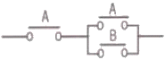
(정답률: 73%)
75. 3상 교류에서 a, b, c상에 대한 전압을 기호법으로 표시하면,
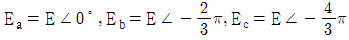
로 표시된다. 여기서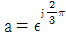
라는 페이저 연산자를 이용하면 Ec는 어떻게 표시되는가?- Ec = E
- Ec = a2E
- Ec = aE
- Ec = (1/a)E
(정답률: 46%)
76. 지시계의 구성 3대 요소가 아닌 것은?
- 유도장치
- 제어장치
- 제동장치
- 구동장치
(정답률: 46%)
77. 워드레오나드 속도 제어는?
- 저항제어
- 계자제어
- 전압제어
- 직병렬제어
(정답률: 42%)
78. 전달함수 G = 1/s+1인 제어계의 인디셜 응답으로 옳은 것은?
- e-t
- 1-e-t
- 1+e-t
- e-t-1
(정답률: 54%)
79. 승강기 등 무인장치의 운전은 어떤 제어인가?
- 정치제어
- 비율제어
- 추종제어
- 프로그램제어
(정답률: 81%)
80. 100mH의 인덕턴스를 갖는 코일에 10A의 전류를 흘릴 때 축적되는 에너지는 몇 J인가?
- 0.5
- 1
- 5
- 10
(정답률: 43%)
5과목: 배관일반
81. 다음 중 열팽창에 의한 관의 신축으로 배관의 이동을 구속 또는 제한하는 장치가 아닌 것은?
- 앵커(anchor)
- 스토퍼(stopper)
- 가이드(guide)
- 인서트(insert)
(정답률: 67%)
82. 공기조화 설비에서 에어워셔(air washer)의 플러딩 노즐이 하는 역할은?
- 공기 중에 포함된 수분을 제거한다.
- 입구공기의 난류를 정류로 만든다.
- 일리미네이터에 부착된 먼지를 제거한다.
- 출구에 섞여 나가는 비산수를 제거한다.
(정답률: 70%)
83. 급탕배관의 구배에 관한 설명으로 옳은 것은?
- 상향공급식의 경우 급탕관은 올림구배, 반탕관은 내림구배로 한다.
- 상향공급식의 경우 급탕관과 반탕관 모두 내림구배로 한다.
- 하향공급식의 경우 급탕관은 내림구배, 반탕관은 올림구배로 한다.
- 하향공급식의 경우 급탕관과 반탕관 모두 올림구배로 한다.
(정답률: 65%)
84. 아래의 저압가스 배관의 직경을 구하는 식에서 S가 의미하는 것은? (단, L은 관의 길이를 의미한다.)
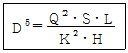
- 관의 내경
- 공급 압력차
- 가스 유량
- 가스 비중
(정답률: 80%)
85. 공기조화설비에서 수 배관 시공 시 주요 기기류의 접속배관에는 수리 시 전 계통의 물을 배수하지 않도록 서비스용 밸브를 설치한다. 이때 밸브를 완전히 열었을 때 저항이 적은 밸브가 요구되는데 가장 적당한 밸브는?
- 나비밸브
- 게이트밸브
- 니들밸브
- 글로브밸브
(정답률: 70%)
86. 가스수요의 시간적 변화에 따라 일정한 가스량을 안정하게 공급하고 저장을 할 수 있는 가스홀더의 종류가 아닌 것은?
- 무수(無水)식
- 유수(有水)식
- 주수(柱水)식
- 구(球)형
(정답률: 68%)
87. 배관재료 선정 시 고려해야 할 사항으로 가장 거리가 먼 것은?
- 수송유체에 의한 관의 내식성
- 유체의 온도변화에 따른 물리적 성질의 변화
- 사용기간(수명) 및 시공방법
- 사용시기 및 가격
(정답률: 77%)
88. 다음 중 방열기나 팬코일 유니트에 가장 적합한 관 이음은?
- 스위블 이음(swivel joint)
- 루프 이음(loop joint)
- 슬리브 이음(sleeve joint)
- 벨로즈 이음(bellow joint)
(정답률: 67%)
89. 냉매의 토출관의 관경을 결정하려고 할 때 일반적인 사항으로 틀린 것은?
- 냉매 가스 속에 용해하고 있는 기름이 확실히 운반될 수 있게 횡형관에서는 약 6m/s 이상 되도록 할 것
- 냉매 가스 속에 용해하고 있는 기름이 확실히 운반될 수 있게 입상관에서는 약 6m/s 이상 되도록 한다.
- 속도의 압력 손실 및 소음이 일어나지 않을 정도로 속도를 약 25m/s로 제한한다.
- 토출관에 의해 발생된 전 마찰 손실압력은 약 19.6kPa를 넘지 않도록 한다.
(정답률: 46%)
90. 유리섬유 단열재의 특징에 관한 설명으로 틀린 것은?
- 사용 온도범위는 보통 약 –25~300℃이다.
- 다량의 공기를 포함하고 있으므로 보온ㆍ단열 효과가 양호하다.
- 유리를 녹여 섬유화한 것이므로 칼이나 가위등으로 쉽게 절단되지 않는다.
- 순수한 무기질의 섬유제품으로서 불에 잘 타지 않는다.
(정답률: 74%)
91. 증기난방 시 방열 면적 1m2당 증기가 응축되는 양은 약 몇 kg/m2ㆍh인가? (단, 증발잠열은 539kcal/kg이다.)
- 3.4
- 2.1
- 2.0
- 1.2
(정답률: 57%)
92. 냉온수 배관 시 유의사항으로 틀린 것은?
- 공기가 체류하는 장소에는 공기빼기 밸브를 설치한다.
- 기계실 내에서는 일정장소에 수동 공기빼기 밸브를 모아서 설치하고 간접 배수하도록 한다.
- 자동 공기빼기 밸브는 배관이(-)압이 걸리는 부분에 설치한다.
- 주관에서의 분기배관은 신축을 흡수할 수 있도록 스위블 이음으로 하며, 공기가 모이지 않도록 구배를 준다.
(정답률: 72%)
93. 암모니아 냉동장치 배관재료로 사용할 수 없는 것은?
- 이음매 없는 동관
- 배관용 탄소강관
- 저온배관용 강관
- 배관용 스테인리스강관
(정답률: 72%)
94. 수격현상(water hammer)방지법이 아닌 것은?
- 관내의 유속을 낮게 한다.
- 펌프의 플라이 휠을 설치하여 펌프의 속도가 급격히 변하는 것을 막는다.
- 밸브는 펌프 송출구에서 멀리 설치하고 밸브는 적당히 제어한다.
- 조압수조(surge tank)를 관선에 설치한다.
(정답률: 74%)
95. 통기관을 접속하여도 장시간 위생기기를 사용하지 않을 때 봉수파괴가 될 수 있는 원인으로 가장 적당한 것은?
- 자기사이펀 작용
- 흡인작용
- 분출작용
- 증발작용
(정답률: 61%)
96. 다음 중 증기와 응축수 사이의 밀도차 즉, 부력 차이에 의해 작동되는 기계식 트랩은?
- 버킷 트랩
- 벨로즈 트랩
- 바이메탈 트랩
- 디스크 트랩
(정답률: 64%)
97. 수직배관에서의 역류방지를 위해 사용하기 가장 적당한 밸브는?
- 리프트식 체크밸브
- 스윙식 체크밸브
- 안전밸브
- 코크밸브
(정답률: 61%)
98. 기계배기와 기계급기의 조합에 의한 환기방법으로 일반적으로 외기를 정화하기 위한 에어필터를 필요로 하는 환기법은?
- 1종환기
- 2종환기
- 3종환기
- 4종환기
(정답률: 75%)
99. 온수난방 배관에서 리버스 리턴(Reverse return) 방식을 채택하는 주된 이유는?
- 온수의 유량분배를 균일하게 하기 위하여
- 온수배관의 부식을 방지하기 위하여
- 배관의 신축을 흡수하기 위하여
- 배관길이를 짧게 하기 위하여
(정답률: 82%)
100. 병원, 연구소 등에 발생하는 배수로 하수도에 직접 방류할 수 없는 유독한 물질을 함유한 배수를 무엇이라 하는가?
- 오수
- 우수
- 잡배수
- 특수배수
(정답률: 79%)
보일러에서의 열에너지는 h2 - h1 = 193.8 - 191.8 = 2.0kJ/kg 이다. 터빈에서의 일에너지는 h3 - h4 = 2799.5 - 2007.5 = 792.0kJ/kg 이다. 따라서 열효율은 792.0 / 2.0 = 396 이다.
하지만 이 문제에서는 열효율을 백분율로 표기하도록 요구하고 있다. 따라서 396을 100으로 나누어 주면, 3.96이 된다. 이를 백분율로 변환하면 396%가 된다. 하지만 열효율은 항상 100%를 넘을 수 없으므로, 이 값을 100으로 나누어 준 후 100에서 곱해주면 된다. 따라서 최종적인 열효율은 3.96 / 100 * 100 = 30.3%가 된다. 따라서 정답은 "30.3%"이다.